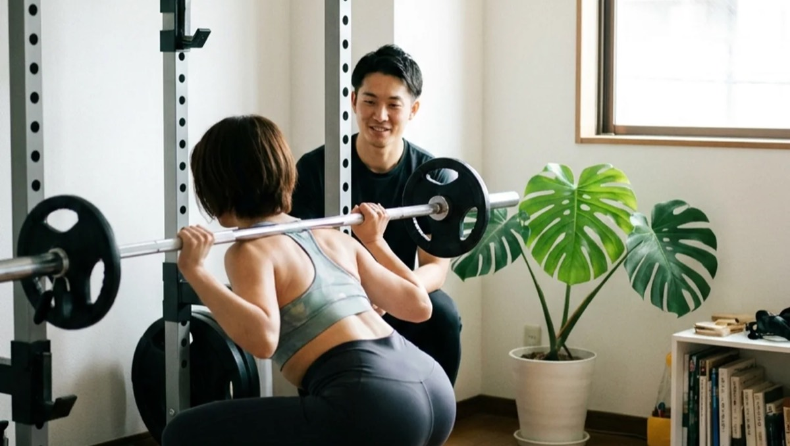

NEXUS Personal Gym ／ 神奈川県横浜市神奈川区
NEXUSパーソナルジム 三ツ沢上町店｜観る側から動く側へ完全個室ジム

横浜市神奈川区三ツ沢上町、横浜市営地下鉄ブルーライン・三ツ沢上町駅からすぐの完全個室パーソナルジムです。三ツ沢は、三ツ沢公園やニッパツ三ツ沢球技場を擁する“スポーツの街”。サッカーやラグビーの試合で熱くなった帰り道、「観ているだけじゃなく、自分も身体を動かしたい」——そんな気持ちが芽生えたことはありませんか。三ツ沢上町店が伝えたいのは、まさにその“観る側から動く側へ”という一歩です。観戦で高ぶった熱を、そのまま自分の身体づくりに変えていく。そして、坂の多い三ツ沢の暮らしに必要な、しっかりした足腰も一緒に育てていく。担当トレーナーと二人だけの完全個室空間で、人目を気にせず自分のペースでトレーニングに集中できます。しかもオープンしたばかりの今は、予約が取りやすく、一人のトレーナーがあなたにじっくり向き合える贅沢な時期。横浜駅からブルーラインでわずか2駅という近さながら、三ツ沢は落ち着いた住宅街で、自分の身体と向き合うには理想的な環境です。ウェア・タオル・ドリンク・プロテインまで全部込みのアメニティ完備で、手ぶら通いOK。毎日8:00〜23:00・LINE予約で、仕事や家事の合間にも通えます。全国約70店舗・会員継続率96%のNEXUSブランドの指導を、三ツ沢の地で。
- 完全個室
- ブルーライン三ツ沢上町駅すぐ
- 横浜駅から2駅
- スポーツ体力づくり対応
- 手ぶら通いOK
- NEXUS全国約70店舗
この店舗の特徴
NEXUS三ツ沢上町店は、横浜市神奈川区三ツ沢上町にある完全個室パーソナルジム。横浜市営地下鉄ブルーライン・三ツ沢上町駅からすぐの立地です。この店舗がコンセプトに掲げているのは、「観る側から、動く側へ」。三ツ沢という土地は、三ツ沢公園やニッパツ三ツ沢球技場を中心に、サッカー・ラグビー・陸上など、たくさんのスポーツが行われる街です。週末になれば、試合を観に多くの人が集まります。けれど、スポーツの本当の醍醐味は、観ることだけではありません。自分の身体を動かし、少しずつ変えていく——その充実感は、観戦とはまた違う喜びをくれます。三ツ沢上町店は、観戦で高ぶった「自分も動きたい」という気持ちを、実際の身体づくりへとつなげる場所でありたいと考えています。とはいえ、いきなり激しい運動をする必要はありません。完全個室のマンツーマンで、あなたの今の体力に合わせて、いちばん最初の一歩から丁寧に伴走します。ダイエットや体型改善はもちろん、スポーツのパフォーマンス向上や、坂の多い三ツ沢の暮らしに負けない足腰づくりまで、目的に合わせてメニューを組めるのがパーソナルトレーニングの強みです。そしてオープン直後の今なら、予約が取りやすく、トレーナーもあなた一人にじっくり時間をかけられます。新店でも指導品質に不安はありません。全トレーナーが3ヶ月の自社教育プログラムを修了し、全国約70店舗・会員継続率96%のNEXUSブランドの基準を満たしています。観る側から、動く側へ。その一歩を、三ツ沢上町店で踏み出してみませんか。
観戦の熱を、自分の身体に

スタジアムで選手が躍動する姿を見て、胸が熱くなる。そんな経験は、スポーツの街・三ツ沢に暮らす方なら誰しもあるのではないでしょうか。ニッパツ三ツ沢球技場での試合の帰り道、火照った気持ちのまま「自分も何か身体を動かしたい」と感じる——その瞬間の気持ちは、とても貴重なものです。三ツ沢上町店は、その熱を冷まさずに、自分の身体づくりへとつなげるお手伝いをします。もちろん、プロ選手のような激しいトレーニングをする必要はありません。大切なのは、「動きたい」という気持ちを、実際の一歩に変えること。完全個室のマンツーマンだからこそ、あなたの今の体力や目的に合わせて、無理のないところからスタートできます。身体を動かして汗を流すと、観戦で味わう高揚感とはまた違う、自分の身体が応えてくれる確かな手応えがあります。トレーニングを重ねるうちに、姿勢が整い、動きが軽くなり、日常の階段や坂道もラクに感じられるようになる。その変化は、他の誰でもない、あなた自身が努力で勝ち取ったものです。観る側でいるのも楽しいけれど、動く側になると、スポーツの街・三ツ沢での暮らしはもっと豊かになります。「いつか自分も」と思っているなら、その“いつか”を今日にしませんか。三ツ沢上町店のトレーナーが、あなたの「動きたい」を、確かな身体の変化に変えていきます。
坂の街に負けない足腰

三ツ沢に暮らす方なら、日々の生活で坂道を上り下りする機会が多いことを実感されているはずです。駅から自宅まで、買い物の行き帰り、三ツ沢公園への散歩——三ツ沢は起伏に富んだ土地柄で、平坦な道ばかりではありません。「最近、坂道で息が上がるようになった」「駅までの上り坂がつらい」と感じることが増えたなら、それは下半身の筋力が落ちてきているサインかもしれません。三ツ沢上町店では、そんな“坂の街の暮らし”に必要な足腰づくりを、トレーニングの一つの柱にしています。スクワットをはじめとした下半身のトレーニングは、太ももやお尻、ふくらはぎといった大きな筋肉を効率よく鍛えられます。これらの筋肉が強くなると、坂道や階段が軽く感じられるようになるだけでなく、代謝が上がって痩せやすい身体にもつながります。さらに、正しいフォームで下半身を鍛えることは、膝や腰への負担を減らし、長く元気に歩ける身体を保つことにも役立ちます。完全個室のマンツーマンだからこそ、あなたの膝や腰の状態を確認しながら、無理のない負荷で丁寧に進められます。「坂道を軽やかに上れる自分」を取り戻すことは、日々の暮らしの快適さに直結します。三ツ沢の坂に負けない、しっかりした足腰を、三ツ沢上町店で一緒につくっていきましょう。
オープン直後の、今だけの通いやすさ

新しくオープンした店舗には、その時期ならではの大きなメリットがあります。それが「予約の取りやすさ」と「トレーナーとの距離の近さ」です。三ツ沢上町店は2026年にオープンしたばかりの新店。会員がまだ増えすぎていない今だからこそ、日中の時間でも仕事帰りの夜でも、希望の時間帯で予約を取りやすい環境が整っています。横浜駅周辺の人気ジムでは「予約が取りにくくて通いづらい」という声もありますが、オープン直後の三ツ沢上町店なら、その心配がほとんどありません。さらに、この時期に入会される方は、いわば三ツ沢上町店の「一期生」。トレーナーがあなた一人にじっくり時間をかけられるので、身体の状態や目標、生活習慣をきめ細かく把握してもらいながら、丁寧にスタートを切れます。オープニングメンバーとしてトレーナーと関係を築いていく時間は、後から入会する方には得られない、今だけの特別な体験です。「スポーツの街に住んでいるし、自分も身体を動かしたいと思っていた」「パーソナルジムは気になっていたけれど、なかなか一歩を踏み出せなかった」——そんな方にとって、地元・三ツ沢上町に新店ができた今は、始めるのに絶好のタイミングです。観る側から動く側へ、その一歩を踏み出すなら、予約が取りやすく、じっくり向き合ってもらえる今のうちに、ぜひ無料体験にお越しください。オープン直後のゆとりある環境で、気持ちよくスタートを切れます。
横浜駅から2駅・三ツ沢上町駅すぐ
NEXUS三ツ沢上町店は、横浜市神奈川区三ツ沢上町5-1 ロードアトランタビル201号にあります。横浜市営地下鉄ブルーライン・三ツ沢上町駅からすぐの立地で、神奈川区にお住まいの方はもちろん、横浜駅方面から通勤・通学される方にも便利にご利用いただけます。三ツ沢上町駅は、横浜駅からブルーラインでわずか2駅・約4分。横浜の中心地からこれだけ近いのに、三ツ沢は落ち着いた住宅街で、静かに自分の身体と向き合える環境が魅力です。横浜駅周辺の混雑したジムを避けたい方、仕事帰りに少しだけ足をのばして集中したい方に、ちょうどいい距離感です。また、同じブルーライン沿線・神奈川区内には系列の岸根公園店もあり、お住まいやお勤めの場所に合わせて店舗を選べます。ご自宅や職場からの動線でいちばん続けやすい店舗を選ぶのが、無理なく通い続けるコツです。毎日8:00〜23:00の営業なので、朝の時間でも仕事帰りの夜でも、自分の生活リズムに合わせて通えます。ウェア・水・タオル・プロテインまですべてアメニティとしてご用意しているので、横浜での買い物帰りにも手ぶらのまま立ち寄れます。予約・変更はLINEで完結し、6時間前まで無料でキャンセル可能。三ツ沢上町・横浜駅周辺・神奈川区で通いやすい完全個室ジムをお探しの方は、ぜひ一度お越しください。
NEXUSブランドの実績
三ツ沢上町店はオープンしたばかりの新店のため、まだGoogleマップの口コミは集まっていません（現在収集中です）。しかし、指導の品質を裏づけるのは、NEXUSブランド全体で積み上げてきた実績です。NEXUSは全国約70店舗を展開し、会員継続率は96%。全トレーナーが3ヶ月の厳しい自社教育プログラムを修了してからデビューし、「優しく寄り添う指導」を全店共通の基準としています。三ツ沢上町店のトレーナーも、同じ教育を受けたメンバーです。
同じ横浜市内の系列店では、横浜元町店がGoogle口コミ★5.0（87件）、岸根公園店が★5.0（53件）、綱島店が★5.0（31件）という高い評価をいただいています（2026年7月時点）。これらの評価は、ブランド全体で共有される指導品質の証です。三ツ沢上町店も、この同じ基準でみなさまをお迎えします。
新店だからと不安に思う必要はありません。むしろオープン直後の今は、予約が取りやすく、一人のトレーナーがあなたにじっくり向き合える贅沢な時期です。全国で培った確かな指導を、できたばかりの三ツ沢上町店で、ゆとりある環境で受けられます。まずは無料体験で、トレーナーの質とジムの雰囲気を、あなた自身の目で確かめてみてください。三ツ沢上町店の最初のメンバーとして、一緒にこの店舗を育てていける今を、ぜひ楽しんでいただければと思います。
まずは無料体験から
「三ツ沢上町で完全個室のパーソナルジムを探していた」「スポーツ観戦のたびに、自分も動きたいと思っていた」「坂道がつらくなってきたので足腰を鍛えたい」——そんな方こそ、まずは無料体験からお試しください。三ツ沢上町店の無料体験は、カウンセリングであなたの目標や運動経験、生活習慣をじっくり伺うところから始まります。その上で、姿勢や身体のクセをチェックし、実際にトレーニングを体験。フォームを丁寧に確認しながら進めるので、運動が初めての方でも安心です。オープン直後の今なら予約も取りやすく、トレーナーがあなたにたっぷり時間をかけて、最初の一歩を一緒に踏み出せます。体験も手ぶらでOK。ウェア・タオル・ドリンクもすべてご用意しているので、横浜での買い物や観戦の帰りに、そのままお立ち寄りいただけます。横浜市営地下鉄ブルーライン・三ツ沢上町駅からすぐ、横浜駅からも2駅と通いやすく、無理な勧誘は一切ありません。観る側から動く側へ、その一歩を踏み出すなら今がチャンス。三ツ沢上町店の一期生として、気持ちのいいスタートを切りませんか。まずは気軽に、無料体験へお越しください。
料金プラン
入会金は通常55,000円、無料体験当日入会で15,000円（税込）に割引。AI食事指導は月額3,000円（税込）。全店舗共通の料金です。
アクセス
- 店舗名
- NEXUSパーソナルジム 三ツ沢上町店
- 住所
- 〒221-0856
神奈川県横浜市神奈川区三ツ沢上町5-1 ロードアトランタビル201号 - 最寄り駅
- 横浜市営地下鉄ブルーライン 三ツ沢上町駅
- 営業時間
- 毎日 8:00〜23:00
- 電話番号
- 050-1790-8499
三ツ沢上町店のよくある質問
Q三ツ沢上町・神奈川区にパーソナルジムはありますか？+
Q横浜駅の近くで探していますが通えますか？+
Qスポーツのための体力づくりもできますか？+
よくある質問（全店共通）
料金・制度などNEXUS全店に共通するご質問です。さらに詳しくは110問のFAQをご覧ください。
Q料金はいくらですか？+
Q手ぶらで通えますか？+
Qキャンセルはいつまでできますか？+
Q食事指導はありますか？+
Qトレーナーはどんな人ですか？+
Q女性会員は多いですか？+
Q体験の流れは？+
NEXUSパーソナルジムの特徴・料金をもっと見る